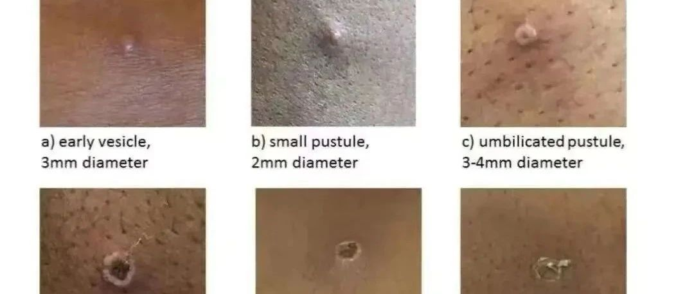

猴痘能看得出来吗？


图一是猴痘从开始到痊愈的经过，图二是一个推特上的博主通过接吻感染猴痘后起痘到痊愈的过程。你可以看到，开始的痘痘和我们平常的痘痘是没法区分的，而到了后面则比较有代表性。所以还是要留意观察，发现不对及时隔离或就医。
那我们是不是没办法知道谁有猴痘，谁没有猴痘了，又不能不接触不做爱，那不是很危险？现实确实是如此，我对此的建议可以看我之前的一篇文章 猴痘专题 | 预防猴痘我们可以做什么？
-------------------------------


图一是猴痘从开始到痊愈的经过，图二是一个推特上的博主通过接吻感染猴痘后起痘到痊愈的过程。你可以看到，开始的痘痘和我们平常的痘痘是没法区分的，而到了后面则比较有代表性。所以还是要留意观察，发现不对及时隔离或就医。
那我们是不是没办法知道谁有猴痘，谁没有猴痘了，又不能不接触不做爱，那不是很危险？现实确实是如此，我对此的建议可以看我之前的一篇文章 猴痘专题 | 预防猴痘我们可以做什么？
-------------------------------